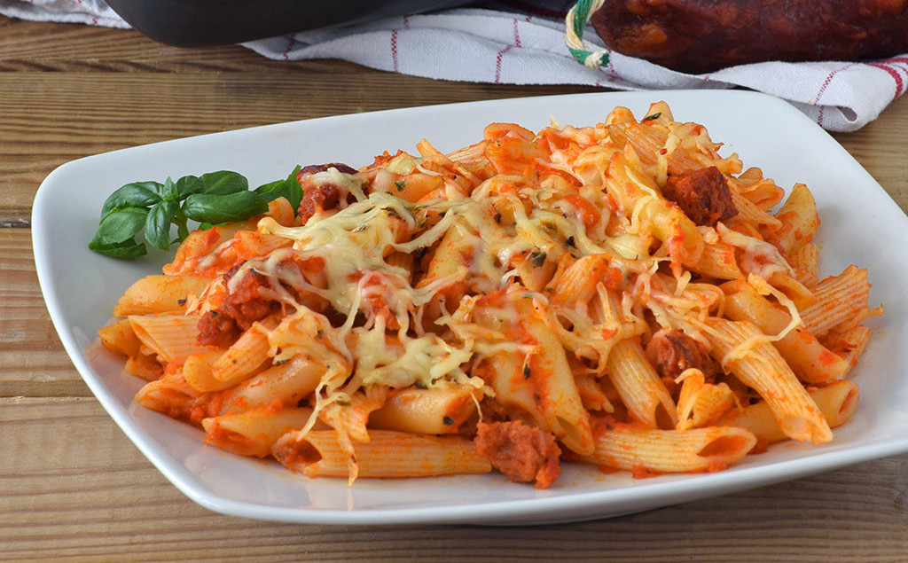

Macarrones con chorizo
Ingredientes: 400 g de Macarrones, 1 Cebolla, 2 Dientes de ajo, 1 Puerro, 1 Pimiento rojo, 1 Guindilla, 2 Tomate seco rehidratado, 800g Tomate troceado natural, 150 g Chorizo fresco, Vino blanco 100 ml, 1 Laurel, orégano seco al gusto, Azúcar opcional, Pimienta negra molida, Queso para gratinar al gusto, Aceite de oliva virgen extra, Sal Elaboración: Empezamos cociendo los macarrones en abundante agua salada siguiendo las indicaciones del paquete, procurando dejarla al dente. A mí me gusta mezclar la variedad lisa con la rallada, pero es algo totalmente opcional. Escurrir bien y reservar en una fuente o en una bandeja. Picar la cebolla, los dientes de ajo, el puerro, el pimiento y la guindilla sin semillas. Precalentar el horno a 200ºC. Calentar un poco de aceite en una sartén o cazuela y pochar un pco la cbeolla con los ajos. Agregar el resto de vegetales y cocinar a fuego medio hasta que cojan color. Incorporar el tomate seco picado, el tomate en conserva escurrido, el laurel y un poco de sal y azúcar. Remover bien y cocinar a fuego medio unos 10 minutos. Añadir un chorrito de vino, dejar que evapore el alcohol y echar orégano. Cocer 10-15 minutos más. Triturar la salsa retirando el laurel y reservar. Picar el chorizo retirando la piel o cortar en trozos no muy grandes y dorar en la misma sartén. Añadir la salsa de tomate y los macarrones y cocinar el conjunto un par de minutos. Trasladar a una fuente de horno, añadir el queso y gratinar hasta que se dore al gusto. Servir con pimienta negra recién molida y un poco de albahaca fresca, si tenemos.
Para acompañar los macarrones recomiendo que escojas tu refresco favorito o una buena cerveza.
De postre podemos tomar un buen helado italiano para acabar de quitarnos el sabor picante del chorizo
Dídac Moliner